NIHAO XX: أثر عتبة تشكل النجوم في تحول النتوء المركزي إلى نواة في هالات المادة المظلمة الباردة
الملخص
نستخدم محاكيات كونية هيدروديناميكية لتشكل المجرات من مشروع NIHAO لدراسة أثر عتبة تشكل النجوم في استجابة هالة المادة المظلمة (DM) للعمليات الباريونية. إن عتبة NIHAO المرجعية، ، تؤدي إلى تمدد قوي لهالة DM في المجرات ذات الكتل النجمية ضمن المجال . نجد أن العتبات الأخفض مثل (كما استعملت في مشروعي EAGLE/APOSTLE وIllustris/AURIGA) لا تؤدي إلى تمدد هالي ذي شأن عند أي مقياس كتلي. ويتطلب تمدد الهالة المدفوع بتغذية المستعرات العظمى الراجعة تقلبات كبيرة في الكسر الغازي المحلي على أزمنة دون-ديناميكية (أي 50 Myr عند أنصاف أقطار نصف الضوء للمجرات)، وهي نفسها ناجمة عن تغير معدل تشكل النجوم. وعند واحد في المئة من نصف القطر الفيريالي، تمتلك المحاكيات ذات كسورا غازية مقدارها وتغيرات مقدارها ، في حين تمتلك محاكيات كسورا غازية أقل برتبة قدرية، ومن ثم لا تمدد الهالة. إن السرعات الدائرية المرصودة للمادة المظلمة في المجرات القزمة القريبة لا تتسق مع محاكيات CDM ذات و، لكنها تتفق على نحو معقول مع . وتكون معدلات تشكل النجوم أشد تغيرا عند قيم أعلى من ، وعند كتل مجرية أصغر، وعندما يقاس تشكل النجوم على مقاييس زمنية أقصر. فعلى سبيل المثال، تظهر المحاكيات ذات تشتتا أعلى بما يصل إلى 0.4 dex في معدلات تشكل النجوم النوعية مقارنة بالمحاكيات ذات . وعليه، ينبغي أن يصبح ممكنا في المستقبل القريب تقييد النموذج دون-الشبكي لتشكل النجوم رصديا، ومن ثم تقييد طبيعة DM.
keywords:
علم الكونيات: النظرية – المادة المظلمة – المجرات: التشكل – المجرات: الحركيات والديناميكيات – المجرات: البنية – الطرائق: عددية1 مقدمة
من المحتمل أن توفر بنية هالات المادة المظلمة على مقاييس الكيلوفرسخ أدق اختبار فيزيائي فلكي لنموذج المادة المظلمة الباردة (CDM)، وبصورة أعم لطبيعة المادة المظلمة (مثلا، Bullock & Boylan-Kolchin, 2017). في محاكيات CDM عديمة التبدد، تكون بنية الهالة محددة جيدا (مثلا، Stadel et al., 2009; Dutton & Macciò, 2014). ويعتقد أن تبدد الغاز لا يؤدي إلا إلى انكماش هالة المادة المظلمة (Blumenthal et al., 1986; Gnedin et al., 2004). غير أن عمليات باريونية أخرى يمكن أن تسبب تمدد هالة المادة المظلمة (مثلا، El-Zant et al., 2001; Weinberg & Katz, 2002; Read & Gilmore, 2005; Pontzen & Governato, 2012). ونظرا إلى الطبيعة اللاخطية لهذه العمليات وأهمية الشروط الابتدائية والتطور الواقعيين، فإن أثرها يدرس على أفضل وجه باستعمال محاكيات كونية هيدروديناميكية.
| Box | Halo ID range | Number | ||||
|---|---|---|---|---|---|---|
| (Mpc) | ( M⊙) | (M⊙) | (pc) | (M⊙) | (pc) | |
| 60 | g7.08e11 - g8.26e11 | 4 | 3.166105 | 397.9 | 1.735106 | 931.4 |
| 60 | g1.37e11 - g3.71e11 | 8 | 3.958104 | 199.0 | 2.169105 | 465.7 |
| 60 | g2.34e10 - g4.99e10 | 4 | 1.173104 | 132.6 | 6.426104 | 310.5 |
| 20 | g7.05e09 - g1.23e10 | 4 | 3.475103 | 88.4 | 1.904104 | 207.0 |
عانت المحاكيات المبكرة من فرط التبريد، فكونت نجوما أكثر من اللازم برتبة قدرية. أما الجيل الحالي من المحاكيات فقادر على تكوين مجرات ذات كميات واقعية من النجوم والغاز البارد في الحاضر والماضي معا (Hopkins et al., 2014; Marinacci et al., 2014; Wang et al., 2015; Schaye et al., 2015). وقد ساعد تحسن الدقة العددية دون شك، إلا أن الفرق الرئيسي يعود إلى تحسن النماذج دون-الشبكية لتشكل النجوم والتغذية الراجعة. وتغدو النماذج دون-الشبكية ضرورية بسبب المدى الديناميكي الكبير المطلوب لمحاكاة المقاييس الكونية وتكون النجوم الفردية، وكذلك لأن فيزياء تشكل النجوم ما زالت مسألة غير محلولة. ويحاول النموذج دون-الشبكي تمثيل العملية التي يتحول بها الغاز إلى نجوم والتغذية الراجعة اللاحقة للطاقة إلى الوسط بين النجمي (ISM) باستخدام نماذج فعالة (أي متوسطة على عدد كبير من أحداث تشكل النجوم والتغذية الراجعة). نلاحظ أننا لا نحتاج بالضرورة إلى فهم كيفية تشكل النجوم على المستوى الميكروي، لكننا نحتاج إلى نموذج فعال لكيفية تشكل النجوم على مقاييس kpc. والنماذج الفعالة شائعة في الفيزياء؛ فعلى سبيل المثال، يمكن نمذجة العمليات الذرية من دون فهم للكواركات.
تمتلك النماذج دون-الشبكية لتشكل النجوم والتغذية الراجعة عدة معاملات حرة، ويجب حاليا معايرتها على الرصد (مثلا، Schaye et al., 2015). نركز في هذه الورقة على معامل واحد، هو عتبة تشكل النجوم، . نختار هذا المعامل لأنه مشترك بين معظم نماذج تشكل المجرات دون-الشبكية، ولأنه يتغير كثيرا في محاكيات ذات دقة عددية قابلة للمقارنة، ولأن لدينا سببا وجيها للاشتباه في أنه سيؤثر في كيفية استجابة الهالة المظلمة لتشكل النجوم (مثلا، Pontzen & Governato, 2012). وعلاوة على ذلك، لا يرى تمدد الهالة إلا في المحاكيات التي تعتمد عتبة عالية (Governato et al., 2010; Macciò et al., 2012; Pontzen & Governato, 2012; Teyssier et al., 2013; Di Cintio et al., 2014a; Chan et al., 2015; Read et al., 2016; Tollet et al., 2016)، بينما لا تجد المحاكيات ذات العتبة المنخفضة تمددا هاليا معتبرا قط (Oman et al., 2015; Schaller et al., 2015).
هدف هذه الورقة هو اختبار اعتماد استجابة الهالة على عتبة تشكل النجوم، وتحديد أي طرائق رصدية للتمييز بين العتبات المختلفة. وتنظم هذه الورقة كما يلي. تعرض مجموعة المحاكيات في القسم 2. وتعرض نتائج نسب الكتل النجمية إلى كتل الهالات ومقاطع كثافة المادة المظلمة في القسم 3. ويقدم القسم 4 مقارنة بين مقاطع السرعة الدائرية للمادة المظلمة المحاكاة والمرصودة. ويناقش القسم 5 الآلية الفيزيائية التي تقود الفروق في استجابة الهالة في محاكياتنا والاختبارات الرصدية. وترد خلاصة في القسم 6.
2 المحاكيات
نستخدم مجموعة من 20 هالة ذات كتل فيريالية بين و مأخوذة من مشروع NIHAO (Wang et al., 2015)، ونعيد محاكاتها بثلاث قيم مختلفة من . نقدم هنا لمحة موجزة عن محاكيات NIHAO ونحيل القارئ إلى Wang et al. (2015) لمناقشة أشمل.
NIHAO عينة من 100 محاكاة كونية هيدروديناميكية مكبرة باستعمال كود SPH المسمى gasoline2 (Wadsley et al., 2017). تنتقى الهالات عند الانزياح الأحمر من محاكيات أم عديمة التبدد بأحجام صناديق 60 و20 و15 Mpc، المقدمة في Dutton & Macciò (2014)، والتي تعتمد كونية CDM مسطحة بمعاملات من Planck Collaboration et al. (2014): معامل هابل = 67.1 Mpc-1؛ كثافة المادة ؛ كثافة الطاقة المظلمة ؛ كثافة الباريونات ؛ تطبيع طيف القدرة ، وميل طيف القدرة . ويكون الكسر الباريوني الكوني الموافق . وتنتقى الهالات بانتظام في لوغاريتم كتلة الهالة من إلى من دون الرجوع إلى تاريخ اندماج الهالة أو تركيزها أو معامل لفها.
2.1 الدقة
اختيرت كتل جسيمات المادة المظلمة وأطوال التليين بحيث تحل مقطع الكتلة عند في المئة من نصف القطر الفيريالي وفق معايير Power et al. (2003). ويؤدي هذا الاختيار إلى تقارب مقطع المادة المظلمة عند طول تليين و جسيم مادة مظلمة داخل نصف القطر الفيريالي لجميع الهالات الرئيسية عند . أما كتل جسيمات الغاز وأطوال تليينها الموافقة فهي أصغر بعاملين و . وترد كتل الجسيمات وأطوال التليين في الجدول 1. ولكل محاكاة هيدروديناميكية محاكاة مقابلة بالمادة المظلمة فقط (DMO) بنفس الدقة. وقد بدأت هذه المحاكيات باستعمال الشروط الابتدائية عينها، مع استبدال الجسيمات الباريونية بجسيمات مادة مظلمة.
تستعمل المحاكيات خطوات زمنية تكيفية. نبدأ بـ 1024 خطوات زمنية رئيسية مدة كل منها 13.5 مليون سنة (عمر universe/1024)، ثم ينقح الكود هذه الخطوة الزمنية بحسب تسارع الجسيم. ونسمح بحد أقصى قدره 20 من التنقيحات، وهو ما يحدد الحد الأدنى عند 12.9 سنة (الخطوة الزمنية القصوى/).
2.2 تشكل النجوم
ينفذ تشكل النجوم كما هو موصوف في Stinson et al. (2006, 2013). تتشكل النجوم من غاز بارد (K) وكثيف ([cm-3]). ويحول الغاز المؤهل لتشكيل النجوم إلى نجوم وفق
| (1) |
هنا تمثل كتلة النجوم المتشكلة، ويمثل Myr الخطوة الزمنية بين أحداث تشكل النجوم، وتمثل الزمن الديناميكي لجسيم الغاز. وتضبط كفاءة تشكل النجوم على في جميع المحاكيات.
المعامل الرئيسي المتعلق بدراستنا هو عتبة تشكل النجوم، . في محاكيات NIHAO المرجعية نعتمد . هنا تمثل 50 عدد الجسيمات المستعملة في نواة التنعيم SPH، وتمثل الكتلة الابتدائية لجسيمات الغاز، ويمثل تليين القوة الثقالية لجسيم الغاز. وفي محاكياتنا نختار ، بحيث تكون عتبة تشكل النجوم مستقلة عن كتلة جسيم الغاز. ونشغل كل محاكاة عند عتبتين إضافيتين لتشكل النجوم: و. وتشبه الأولى ما اعتمدته مشروعات EAGLE/APOSTLE (Schaye et al., 2015; Sawala et al., 2016) وIllustris/AURIGA (Vogelsberger et al., 2014; Grand et al., 2017). ويستعمل مشروع FIRE (Hopkins et al., 2014, 2018) عتبات لتشكل النجوم تصل إلى أو . ولا نجري محاكيات بهذه القيم العالية لأن اختيارنا لكتلة الغاز وتليين القوة لا يمكننا من حل هذه الكثافات. وتستخدم كل محاكيات مشروع NIHAO، بما فيها تلك المستعملة هنا، أرضية ضغط لإبقاء كتلة جينز للغاز محلولة عدديا ولمنع التشظي الاصطناعي.
نلاحظ أن جميع العتبات التي نجربها أدنى بكثير من الكثافة التي تتشكل عندها النجوم في الكون الحقيقي. فالنجوم تتشكل في لباب السحب الجزيئية العملاقة عند كثافات . وللسحب الجزيئية العملاقة كثافات نموذجية ، بينما يتشكل الغاز الجزيئي عادة عند كثافات . لذلك قد يكون مفاجئا أن يكون ممكنا نمذجة تشكل النجوم بدقة على مقاييس kpc باستعمال عتبة كثافة منخفضة مثل . غير أننا، كما نوقش في المقدمة، لا ننمذج أحداث تشكل النجوم وSN الفردية، بل مجموعة إحصائية منها. لذلك قد يكون ممكنا التقاط السمات الأساسية لتشكل النجوم والتغذية الراجعة باستعمال عتبة فعالة لتشكل النجوم أدنى بكثير من عتبة مناطق تشكل النجوم الفردية.
2.3 التغذية الراجعة
تستخدم محاكيات NIHAO تغذية راجعة حرارية في حقبتين تبعا لـ Stinson et al. (2013). في الحقبة الأولى، تحدث «تغذية راجعة قبل SN» (التغذية الراجعة النجمية المبكرة، ESF) قبل انفجار أي مستعرات عظمى. وتمثل ESF الرياح النجمية والتأين الضوئي من النجوم الشابة اللامعة. وتتكون ESF من كسر من التدفق النجمي الكلي المقذوف من النجوم إلى الغاز المحيط ( erg من الطاقة الحرارية لكل من كامل الجماعة النجمية). ويترك التبريد الإشعاعي مفعلا في التغذية الراجعة قبل SN. وتبدأ الحقبة الثانية بعد 4 Myr من تشكل النجم، عندما تبدأ المستعرات العظمى الأولى بالانفجار. ولا تعد إلا طاقة المستعرات العظمى تغذية راجعة في هذه الحقبة الثانية. فالنجوم ذات الكتلة تقذف كلا من الطاقة ( erg/SN) والمعادن في غاز الوسط بين النجمي المحيط بالمنطقة التي تشكلت فيها. وتنفذ تغذية المستعرات العظمى الراجعة باستعمال صياغة الموجة الانفجارية الموصوفة في Stinson et al. (2006). وبما أن الغاز المتلقي للطاقة كثيف، فسيشعها بعيدا بسرعة بسبب كفاءة تبريده. ولهذا السبب يؤخر التبريد للجسيمات داخل منطقة الانفجار لمدة Myr. وقد عويرت المعاملات الحرة لنموذج التغذية الراجعة على تطور علاقة الكتلة النجمية مقابل كتلة الهالة من مطابقة وفرة الهالات (Behroozi et al., 2013; Moster et al., 2013) لهالة بكتلة درب التبانة .
في EAGLE، تنفذ التغذية الراجعة الطاقية من تشكل النجوم باستعمال الوصفة الحرارية الاحتمالية لـ Dalla Vecchia & Schaye (2012). وبدلا من تأخير التبريد، يؤخرون حقن الطاقة في جسيمات الغاز بحيث تكون الجسيمات التي تسخن شديدة السخونة إلى حد لا يتيح لها التبريد بكفاءة. وتنقص الطاقة المحقونة لكل وحدة كتلة نجمية متشكلة مع معدنية الغاز وتزداد مع كثافة الغاز، لحساب الفواقد الإشعاعية غير المحلولة عدديا وللمساعدة في منع الفواقد العددية الزائفة. وتعاير المعاملات الحرة لنموذج تشكل النجوم والتغذية الراجعة في EAGLE على دالة الكتلة النجمية المجرية المرصودة عند ، وعلى علاقة الحجم بالكتلة النجمية لمجرات المتشكلة للنجوم (Crain et al., 2015).
في NIHAO وEAGLE تتطور الرياح المجرية طبيعيا، من دون فرض عوامل تحميل كتلي أو سرعات أو اتجاهات. ومن جهة أخرى، تعتمد محاكيات AURIGA نموذجا حركيا للتغذية الراجعة تعطى فيه جسيمات الغاز المحيطة بجسيم نجمي على نحو متناحي دفعة بسرعة تتناسب مع تشتت السرعة ثلاثي الأبعاد 1D لجسيمات المادة المظلمة المحيطة، ومع عامل تحميل كتلي 0.6. إن النماذج الثلاثة الموصوفة أعلاه كلها، بوضوح، تقريبات لكيفية حدوث التغذية الراجعة فعلا، لكنها ناجحة لأنها تكون مجرات ذات كتل وأحجام نجمية واقعية.
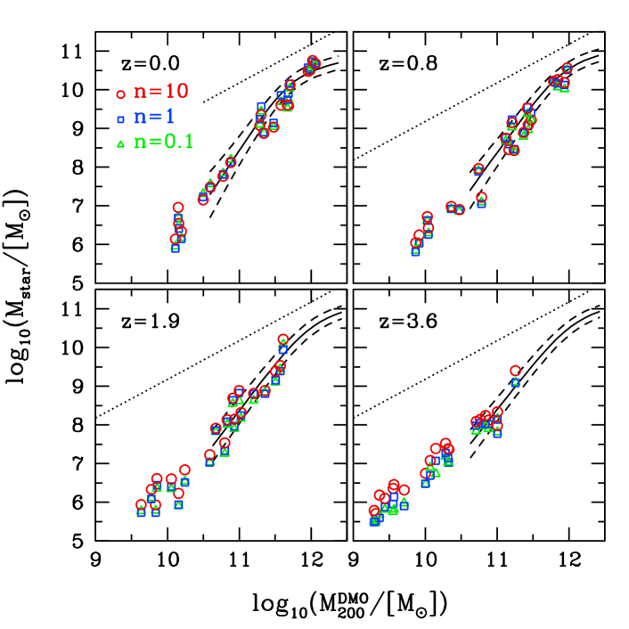
2.4 الهالات والمجرات
تحدد الهالات باستخدام باحث الهالات الهجين MPI+OpenMP AHF11 1 http://popia.ft.uam.es/AMIGA (Gill et al., 2004; Knollmann & Knebe, 2009). يحدد AHF مواضع فرط الكثافة المحلية في حقل كثافة منعّم تكيفيا بوصفها مراكز هالات مرشحة. وتعرف الكتل الفيريالية للهالات بأنها الكتل داخل كرة تكون كثافتها المتوسطة 200 مرة من كثافة المادة الحرجة الكونية، . ويرمز إلى الكتلة والحجم والسرعة الدائرية الفيريالية في المحاكيات الهيدروديناميكية بـ: و و. وترمز الخصائص الموافقة لمحاكيات DMO بأس علوي، . وبالنسبة إلى الباريونات، نحسب الكتل المحصورة داخل كرات نصف قطرها ، وهو ما يقابل إلى kpc. والكتلة النجمية داخل هي ، أما الهيدروجين المتعادل، Hi، داخل فيحسب تبعا لـ Rahmati et al. (2013) كما وصف في Gutcke et al. (2017).
تمثل محاكيات NIHAO أكبر مجموعة من المحاكيات الكونية المكبرة التي تغطي مدى كتل الهالات من إلى . وتكمن فرادتها في الجمع بين الدقة المكانية العالية وعينة إحصائية من الهالات. وكما نوقش في أوراق سابقة ضمن سلسلة NIHAO، تتسق مجرات NIHAO مع طيف واسع من خصائص المجرات في الكون المحلي والبعيد معا. وفي سياق CDM، فإنها تكون كمية النجوم «الصحيحة» في الحاضر وفي الأزمنة الأسبق على حد سواء (Wang et al., 2015). وتتسق كتل الغاز البارد وأحجامه فيها مع الرصد (Stinson et al., 2015; Macciò et al., 2016; Dutton et al., 2019)، وتتبع علاقات تولي-فيشر الغازية والنجمية والباريونية (Dutton et al., 2017). كما تطابق الشكلية المتكتلة المرصودة للمجرات عند انزياحات حمراء عالية (Buck et al., 2017). وعلى مقياس المجرات القزمة تتمدد هالات المادة المظلمة مولدة مقاطع كثافة لمادة مظلمة ذات نوى متسقة مع الرصد (Tollet et al., 2016)، وتحل مشكلة «أكبر من أن تفشل» لمجرات الحقل (Dutton et al., 2016a). وهي تعيد إنتاج تنوع أشكال منحنيات دوران المجرات القزمة Santos-Santos et al. (2018)، ودالة سرعات عروض خطوط Hi (Macciò et al., 2016; Dutton et al., 2019). ولذلك فهي قالب مناسب للتنبؤ ببنية هالات المادة المظلمة الباردة.
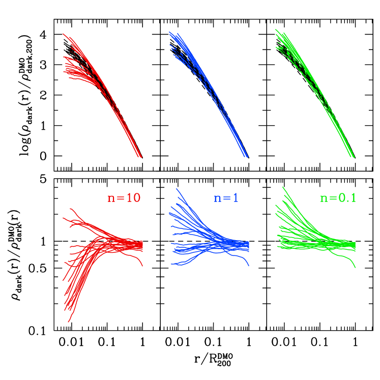
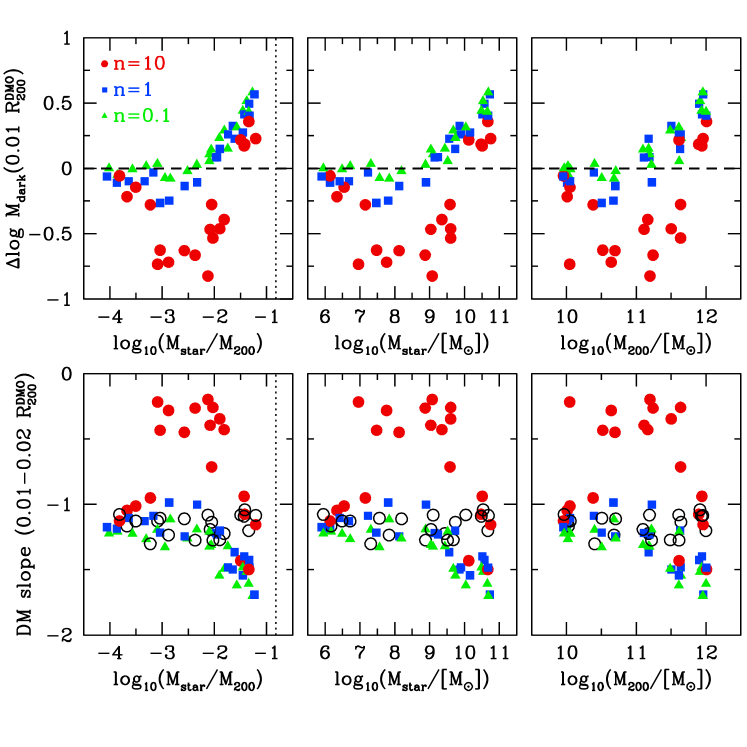
3 النتائج
3.1 نسبة الكتلة النجمية إلى كتلة الهالة
نبدأ مناقشتنا للمحاكيات بالخاصيتين الأساسيتين: الكتلة الكلية داخل نصف القطر الفيريالي لمحاكاة DMO، ؛ والكتلة النجمية (داخل 20 في المئة من نصف القطر الفيريالي) للمحاكاة الهيدروديناميكية الموافقة، . يبين الشكل 1 علاقة الكتلة النجمية بكتلة الهالة للهالة الرئيسية في كل من محاكياتنا عند أربعة انزياحات حمراء: و و و.
تبين الرموز المختلفة عتبات تشكل النجوم الثلاث: (دوائر حمراء)، و (مربعات زرقاء)، و (مثلثات خضراء). ونحافظ على مخطط الألوان والرموز هذا في كامل الورقة. وتمتلك المحاكيات ذات و كتلا نجمية متشابهة بما يكفي بحيث لا نعيد معايرة كفاءة التغذية الراجعة. غير أن الكتل النجمية في محاكيات تكون أصغر بكثير عند الانزياح الأحمر : بعامل لـ ، وبعامل لـ . وللتبسيط نضبط واحدا من معاملات التغذية الراجعة، ، وهو كسر الطاقة الصادرة عن النجوم الشابة الذي يقترن بالـ ISM. تمتلك المحاكيات المرجعية ، ونخفضها إلى في محاكيات ، بحيث تصبح الكتل النجمية عند شبه مساوية للكتل الموافقة في حالتي و. وتمثل إعادة المعايرة هذه خطوة مهمة لا تنفذ غالبا. فهي تمكننا من مقارنة استجابات الهالة للعتبات المختلفة، من دون القلق بشأن عمليات أخرى. فعلى سبيل المثال، يحاكي Governato et al. (2010) هالة واحدة ذات و . تتمدد هالة ، بينما تنكمش هالة . غير أن محاكاة العتبة المنخفضة كونت نجوما أكثر برتبة قدرية، لذلك يصعب فصل آثار التبدد المتزايد عن آثار العتبة المنخفضة.
تبين الخطوط المنقطة الكتلة النجمية العظمى، المقابلة لتحول جميع الباريونات الكونية المتاحة إلى نجوم. وتبين الخطوط المتصلة والمتقطعة علاقات المتوسط والتشتت من مطابقة وفرة الهالات (Moster et al., 2018). هنا حولنا كتل الهالات في هذه العلاقات إلى تعريفنا، ، باستعمال علاقات التركيز-الكتلة من Dutton & Macciò (2014). وقد استوفينا معاملات الملاءمة من Moster et al. (2018) إلى الانزياحات الحمراء التي نعرضها. ويبين الشكل 1 أن محاكياتنا ذات عتبات تشكل النجوم المختلفة تكون كمية النجوم «الصحيحة» (في سياق CDM) في الحاضر وفي الأزمنة الكونية الأسبق.
3.2 مقاطع الكثافة
يبين الشكل 2 مقاطع كثافة المادة المظلمة المحصورة، ، للمحاكيات عند . ونستخدم مقاطع كثافة المادة المظلمة المحصورة بدلا من المحلية لأن الأولى أشد متانة لكونها مستقلة عن طريقة التقسيم إلى صناديق. وتمثل الخطوط الملونة المحاكيات الهيدروديناميكية. وتبين الخطوط السوداء المتقطعة محاكيات DMO مع إعادة تحجيم لمقطع الكثافة الكلية بمقدار . وتجرى إعادة التحجيم بحيث إن النسبة الواحدية، عند مقارنة المقاطع من المحاكيات الهيدروديناميكية ومحاكيات DMO، تقابل غياب استجابة الهالة. وتبين الألواح العليا مقاطع الكثافة، بينما تبين الألواح السفلى النسبة بالنسبة إلى محاكاة DMO. لذلك تمثل الخطوط الواقعة فوق الواحد انكماش الهالة، أما الخطوط الواقعة دون الواحد فتمثل تمدد الهالة. وتؤدي جميع العتبات إلى السلوك نفسه عند أنصاف الأقطار الكبيرة، أي مقدار صغير من تمدد الهالة (الأديباتي) بسبب فقدان الباريونات من الهالة. والاستثناء هو الهالة g2.19e11، التي لها كتلة هالية أعلى في DMO بسبب اندماج رئيسي تأخر في المحاكيات الهيدروديناميكية.
دون 10 في المئة من نصف القطر الفيريالي تبدأ نتائج المحاكاة في التباعد، سواء في مقدار التمدد أو الانكماش. وتظهر محاكيات تغيرا بعامل بالنسبة إلى محاكيات DMO، وتظهر محاكيات عاملا ، ومحاكيات عاملا . لذلك، لا توصف هالات المادة المظلمة الباردة بدالة كونية عامة في أي من عتبات تشكل النجوم التي نجربها، خلافا لما يحدث في محاكيات DMO.
يظهر تنوع استجابة الهالة عند أنصاف الأقطار الصغيرة أوضح في الشكل 3. تبين الألواح العليا التغير في مقطع كتلة المادة المظلمة عند 1 في المئة من نصف القطر الفيريالي (وهو مطابق للتغير في كثافة المادة المظلمة المحصورة)، بينما تبين الألواح السفلى ميل مقطع كثافة المادة المظلمة المحصورة بين 1 و2 في المئة من نصف القطر الفيريالي. نلاحظ أننا هنا نستخدم كثافة المادة المظلمة المحصورة بدلا من كثافة المادة المظلمة المحلية كما استعملناها في أعمالنا السابقة (مثلا، Tollet et al., 2016)، لكن النتائج متشابهة نوعيا.
في الألواح العليا، يقابل الخط المتقطع محاكاة DMO (بحسب التعريف)، بينما في الألواح السفلى تبين الدوائر المفتوحة محاكيات DMO. وتعرض النتائج مقابل كتلة الهالة (يمين)، والكتلة النجمية (وسط)، ونسبة الكتلة النجمية إلى كتلة الهالة (يسار). وقد تبين أن الأخيرة ترتبط باستجابة الهالة (Di Cintio et al., 2014a; Dutton et al., 2016b; Bullock & Boylan-Kolchin, 2017) في المحاكيات ذات عتبات تشكل النجوم العالية ارتباطا أفضل من الكتلة النجمية أو كتلة الهالة وحدهما.
عند أدنى قيم ، تؤدي جميع المحاكيات إلى عدم حدوث تغيرات معنوية في مقطع الكثافة. وعند كفاءات أعلى من إلى ، لا تزال محاكيات لا تظهر تغيرا معنويا، لكن محاكيات تظهر مقدارا صغيرا من التمدد، في حين تظهر محاكيات مقدارا كبيرا من التمدد. وعند ، تؤدي محاكيات و إلى انكماش الهالة، ويشتد ذلك عند الكفاءات الأعلى. وعند أعلى قيم ، تنكمش محاكيات أيضا، لكن ليس بقوة محاكيات الأدنى.
نلاحظ أن نتائجنا لـ شديدة الشبه بنتائج محاكيات APOSTLE وAURIGA التي قدمها حديثا Bose et al. (2018). ويحدث ذلك على الرغم من الفروق العديدة بين الأكواد، بما في ذلك كيفية نمذجة تغذية المستعرات العظمى الراجعة والمخططات الهيدروديناميكية. وهذا يعزز الفكرة القائلة إن عتبة تشكل النجوم هي المعامل دون-الشبكي الرئيسي الذي يتحكم في استجابة الهالة في هالات ذات كتلة .
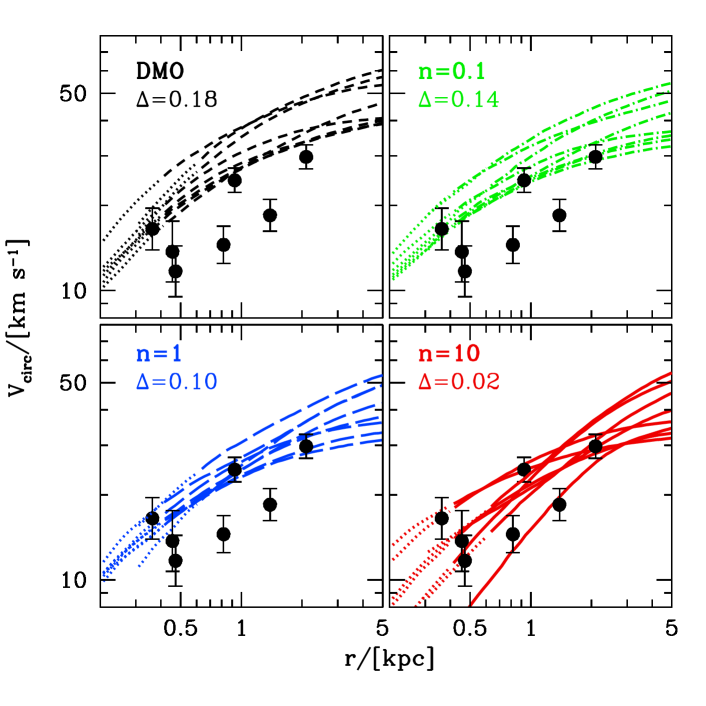
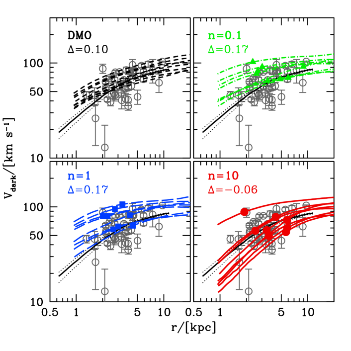
4 مقاطع السرعة
نناقش الآن مقاطع السرعة الدائرية للمحاكيات لإبراز مقدار الفروق الرصدية المتوقعة. نقسم المحاكيات إلى ثلاثة مجالات كتلية تقابل المجرات القزمة ()، والمجرات متوسطة الكتلة ()، والمجرات بكتلة درب التبانة ().
4.1 المجرات القزمة
نبدأ بأدنى 8 هالات كتلة، وهي تكون مجرات ذات كتل نجمية . يبين الشكل 4 مقاطع السرعة الدائرية (الخطوط) لهذه المحاكيات مقارنة بالسرعة الدائرية عند نصف قطر نصف الضوء ثلاثي الأبعاد 3D لمجرات الحقل القزمة في المجموعة المحلية (النقاط ذات أشرطة الخطأ) من Kirby et al. (2014). وقد اخترنا أقزاما مرصودة ذات لمعانيات في نطاق V من إلى وبمسافات لا تقل عن 500 kpc ( من أنصاف الأقطار الفيريالية) عن درب التبانة لتقليل تلوث مجرات الارتداد (Buck et al., 2018).
نوعيا، نرى أن محاكيات DMO أعلى من اللازم بصورة منهجية، بينما تستطيع محاكيات مطابقة جميع الرصود. وتستطيع محاكيات العتبة الأدنى () إعادة إنتاج بعض نقاط البيانات المرصودة، لكن ليس كلها. ولكي نكون أكثر كمية، نحسب الإزاحة المتوسطة بين الرصد () والمحاكيات . ولكل نقطة بيانات مرصودة، ، تكون الإزاحة المتوسطة بالنسبة إلى محاكيات هي
| (2) |
ثم نأخذ متوسط على نقاط البيانات المرصودة البالغ عددها 7، ونرمز إليه بـ . بالنسبة إلى DMO (اللوح العلوي الأيسر)، ، أي إن متوسط الإزاحة بين المحاكاة والرصد عامل 1.5 في السرعة، وعامل 2.3 في الكتلة المحصورة. ويستعيد هذا مشكلة «أكبر من أن تفشل» (TBTF) المعروفة في مجرات الحقل بالمجموعة المحلية (Garrison-Kimmel et al., 2014). وقد بينا سابقا في Dutton et al. (2016a) أن محاكيات NIHAO تحل هذه المشكلة. وبالفعل، بالنسبة إلى NIHAO المرجعية (أسفل اليمين)، تطابق المحاكيات الرصود جيدا مع . غير أن المحاكيات الهيدروديناميكية ذات العتبات الأدنى تتنبأ بتمدد هالي أقل وتميل إلى المبالغة في تقدير الرصود. تمتلك محاكيات القيمة (أي أعلى بعامل )، وتمتلك محاكيات القيمة (أي أعلى بعامل ).
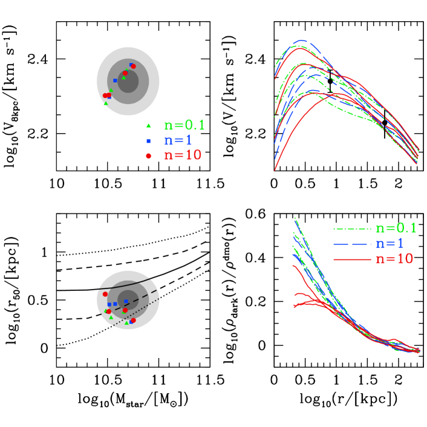
تفضل الرصود الحالية بوضوح محاكيات CDM ذات عتبة تشكل نجوم عالية. وبقلب الحجة، إذا ثبت أن عتبة تشكل نجوم منخفضة تقدم وصفا أفضل لتشكل النجوم في النماذج دون-الشبكية لتشكل المجرات، أمكن استخدام هذا الاختبار لدحض نموذج CDM. ومع أن هذا الاختبار ليس حاسما بسبب الإحصاءات القليلة في الرصود، فيمكننا أن نستنتج أن المحاكيات ذات عتبات تشكل النجوم المختلفة تنتج فروقا واضحة قابلة للاختبار في السرعات الدائرية على مقاييس 1 kpc.
4.2 المجرات متوسطة الكتلة
ننظر بعد ذلك في مجرات ذات كتل نجمية . وتوجد 8 مجموعات من المحاكيات في هذا المجال الكتلي. وتظهر هذه المحاكيات تفاوتا كبيرا في استجابة الهالة، مع تمدد قوي عند ، وعدم تغير أو انكماش طفيف عند و (انظر الشكل 3).
نقارن بمجرات من مسح SPARC للمجرات القريبة المتشكلة للنجوم (Lelli et al., 2016). يبين الشكل 5 مقاطع السرعة الدائرية للمادة المظلمة. وبالنسبة إلى الرصود، تستحصل هذه المقاطع بطرح مقاطع السرعة الدائرية النجمية والغازية من سرعة الدوران الكلية، بافتراض نسبة كتلة نجمية إلى ضوء عند m مقدارها 0.5. وفي الرصود تبين الرموز الرمادية سرعة المادة المظلمة عند نصف قطر نصف الضوء. ويبين الخط الأسود المتصل مقطع السرعة المتوسطة للمادة المظلمة في الرصود مرسوما بين أصغر وأكبر نقطة متوسطتين على منحنى الدوران. ولأن هذه المجرات تميل إلى أن تكون محكومة بالمادة المظلمة، لا يوجد إلا لايقين صغير في مقطع المادة المظلمة ناجم عن لايقين 0.1 dex في نسبة الكتلة النجمية إلى الضوء (الخطوط المنقطة).
بالنسبة إلى محاكيات NIHAO، يعرض كل لوح محاكاة مختلفة: DMO (أعلى اليسار)، و (أعلى اليمين)، و (أسفل اليسار)، و (أسفل اليمين). وتبين الخطوط مقاطع السرعة الدائرية للمادة المظلمة، حيث أعيد تحجيم DMO بالكسر الباريوني الكوني (). وتقع الرموز عند نصف قطر نصف الكتلة المسقط للنجوم. ويبين هذا أن أحجام المجرات في هذه المحاكيات متفقة على نحو معقول مع الرصود، وأن اعتماد الأحجام على عتبة تشكل النجوم صغير فقط. وبالإجمال، لكل مجرة محاكاة نظير مرصود ضمن فاصل صغير في نصف القطر والسرعة. ويمكن، أبعد من ذلك، مطابقة منحنيات السرعة الدائرية الكاملة أو منحنيات السرعة الدائرية للمادة المظلمة لإيجاد نظائر رصدية جيدة لجميع المجرات المحاكاة.
غير أن محاكيات وحدها تستطيع إعادة إنتاج المجال الكامل للسرعات المرصودة في الشكل 5. فالعتبات المنخفضة عاجزة عن تمديد هالة المادة المظلمة تمددا معتبرا. ونوعيا، عند مقارنة مقاطع المادة المظلمة المحاكاة بالمتوسط المرصود، نرى أن محاكيات العتبة العالية () تميل إلى أن تكون دون المتوسط المرصود، بينما تميل محاكيات العتبة المنخفضة () إلى أن تكون فوق علاقة المتوسط. وكميا، يمثل المعامل الإزاحة المتوسطة بين المحاكيات وسرعة المادة المظلمة المرصودة عند 2 kpc. تمتلك DMO القيمة . وتمتلك محاكيات و قيما أعلى من ، وهو ما يشير إلى أن الهالات تنكمش. وتمتلك محاكيات القيمة ، مشيرة إلى التمدد. وعينتنا من المحاكيات صغيرة، لذلك قد يكون التباين الكوني كبيرا. ومع وضع هذا التحفظ جانبا، توجد حلان عامان لهذا التباين.
من جهة الرصد، قد يوجد انحياز منهجي يجعل منحنيات الدوران منخفضة (أو مرتفعة)، ربما من حركات غير دائرية بسبب الدعم الضغطي أو هالات المادة المظلمة ثلاثية المحاور (Valenzuela et al., 2007; Oman et al., 2019). ومن جهة النظرية، قد تؤدي عتبة بين 1 و10 إلى تطابق أفضل مع الرصود. والأكثر إثارة للاهتمام هو احتمال أن تكون عتبة تشكل النجوم المفردة تبسيطا مفرطا، وأن عتبة متغيرة تلتقط فيزياء تشكل النجوم على دقة محاكياتنا بصورة أفضل. وقد يحدث هذا التغير منهجيا مع خصائص أخرى للغاز، أو قد يكون في الأساس متغيرا عشوائيا على المقاييس التي ننظر فيها. وبالفعل يقدم Semenov et al. (2017) نموذجا تكون فيه عتبة تشكل النجوم دالة في كثافة الغاز، ، وفي تشتت السرعة دون-الشبكي الكلي، ، حيث هي سرعة الصوت، و هي السرعات المضطربة دون-الشبكية المنمذجة صراحة. وفي هذا النموذج تتغير عتبة تشكل النجوم الفعالة من إلى .
4.3 المجرات ذات كتلة درب التبانة
يبين الشكل 6 نتائج أكبر أربع محاكيات كتلة. يبين الجزء العلوي الأيسر السرعة الدائرية عند 8 kpc مقابل الكتلة النجمية، بينما يبين الجزء السفلي الأيسر نصف قطر نصف الكتلة النجمية المسقط مقابل الكتلة النجمية. وتعرض التقديرات الرصدية لهذه القيم في درب التبانة بقطوع ناقصة تقابل لايقين 1 و2 و3 ، وهي مبنية على نتائج من النماذج الديناميكية لـ Widrow et al. (2008) وBovy & Rix (2013).
-
•
السرعة الدائرية. نعتمد سرعة دائرية عند 8 kpc (نصف قطر الشمس) مقدارها ، وهو ما يعطي مجال من 191 إلى 251 .
- •
-
•
حجم نصف الكتلة. نعتمد ، وهو ما يعطي مجال من 2.0 إلى 5.0 . يجد Widrow et al. (2008) طول مقياس قرصي مقداره (وكان لسابقتهم حدود من 2.0 إلى 3.8 kpc)، وهو ما يقابل حجم نصف كتلة . ويجد Bovy & Rix (2013) طول مقياس للكتلة النجمية القرصية مقداره kpc، يقابل حجم نصف كتلة . ومن المرجح أن هذه الأحجام القرصية حد أعلى لحجم نصف الضوء الكلي عند إدراج الانتفاخ المركزي. فعلى سبيل المثال، إذا كانت 20 في المئة من الكتلة النجمية في انتفاخ مدمج (Widrow et al., 2008)، فإن نصف قطر نصف الكتلة للمجرة يقارب 1.1 من أطوال مقياس القرص. وبالنسبة إلى الأحجام، تبين الخطوط رصودا من SDSS (Dutton et al., 2011; Simard et al., 2011) لشرائح مئوية مختلفة من توزيع الأحجام في صناديق الكتلة النجمية: الوسيط (متصل)، و15.9 و84.1 (متقطع)، و2.3 و97.7 (منقط). ويبين هذا أن درب التبانة أصغر بنحو (مع لايقين كبير) من المجرات النموذجية ذات الكتلة النجمية نفسها.
نرى أن السرعات والكتل النجمية والأحجام غير حساسة لعتبة تشكل النجوم، وأن جميع المحاكيات 12 تقع داخل مجالات المرصودة.
يبين اللوح العلوي الأيمن مقطع السرعة الدائرية الكلية من 1 kpc إلى نصف القطر الفيريالي. ويمتلك مقطع السرعة الدائرية نقطتي بيانات رصديتين (أشرطة خطأ سوداء): السرعة عند 8 kpc (من أعلاه)، والسرعة عند 60 kpc (Xue et al., 2008). وجميع المحاكيات متسقة مع هذه القيود الرصدية. ويبين اللوح السفلي الأيمن التغير في مقطع كثافة المادة المظلمة بالنسبة إلى DMO. ونرى أوجه تشابه واختلاف في استجابة الهالة بين المحاكيات ذات عتبات تشكل النجوم المختلفة.
أوجه التشابه: عند أنصاف أقطار كبيرة ( kpc) لا يمكن تمييز المقاطع. وعند أنصاف أقطار أصغر تنكمش جميع الهالات، مع انكماش أكبر عند أنصاف الأقطار الأصغر. وهذه النتائج مشابهة نوعيا لدراسات سابقة لهالات ذات كتلة درب التبانة مع عتبات تشكل نجوم منخفضة () (Marinacci et al., 2014) وعالية () (Chan et al., 2015) على حد سواء.
أوجه الاختلاف: عند أنصاف أقطار دون kpc تؤدي محاكيات العتبة العالية (الخطوط الحمراء) إلى انكماش أقل من محاكيات العتبة المنخفضة. وفي ثلاث من محاكيات الأربع، يستوي التغير في مقطع الكثافة (مشيرا إلى ميل داخلي تقاربي مشابه لـ DMO)، بينما في جميع محاكيات و يكون الانكماش أكبر عند أنصاف الأقطار الأصغر (مشيرا إلى ميل تقاربي أشد انحدارا من DMO). ولهذه الفروق تبعات على إشارة فناء المادة المظلمة من مركز المجرة، إذ إن الإشارة تتناسب مع مربع الكثافة.
5 الآلية الفيزيائية لتمدد الهالة
لقد بينا كيف تعتمد بنية هالة المادة المظلمة بقوة على عتبة تشكل النجوم المستعملة في المحاكاة. ونناقش الآن الآلية الفيزيائية التي تقود استجابات الهالة المختلفة، وطرائق رصدية للتمييز بينها.
من مشاهدة أفلام تطور الغاز والنجوم، نرى أن ثمة فروقا واضحة في التوزيع المكاني والزماني لتشكل النجوم. وعلى وجه التحديد، تؤدي العتبات الأعلى إلى تشكل نجوم أشد انفجارية (أي متركز في المكان والزمان)، بينما تؤدي العتبات الأدنى إلى توزيعات أكثر انتظاما لتشكل النجوم في المكان والزمان كليهما.
تسبب التدفقات الغازية المدفوعة بتغذية SN الراجعة تمدد الهالة عندما تؤدي إلى تغير سريع في الكمون (Pontzen & Governato, 2012). وفي هذه الحالة، تعني كلمة سريع أنه أسرع مقارنة بالزمن الديناميكي. وتتغير مدارات الجسيمات بقدر مربع التغير في الكمون (Pontzen & Governato, 2012). وباستعمال نموذج مبسط لتدفقات داخلة أديباتية تتبعها تدفقات خارجة اندفاعية، بين Dutton et al. (2016b) أن النسبة بين نصف القطر النهائي والابتدائي لقشرة من المادة المظلمة تتناسب مع ، حيث هي النسبة بين كتلة الغاز المزالة من نصف قطر والكتلة الكلية المحصورة عند نصف القطر . لذلك، فإن حدث تدفق خارج واحدا، وليكن ، له أثر أكبر برتبة قدرية في بنية الهالة من 10 أحداث تدفق خارج بقيمة ، حتى وإن كانت كتلة التدفق الخارج المتكاملة الكلية هي نفسها.
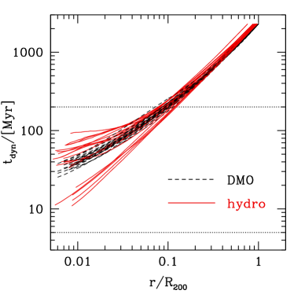
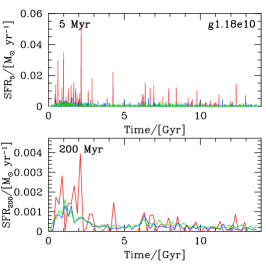
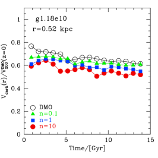
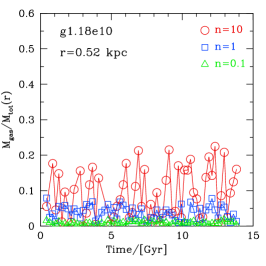
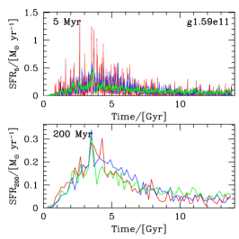
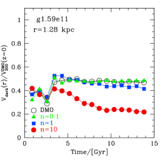
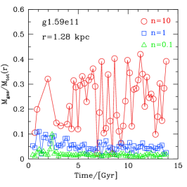
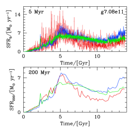
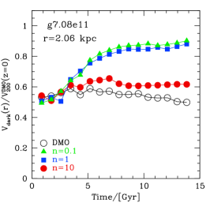
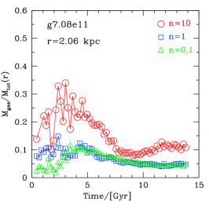
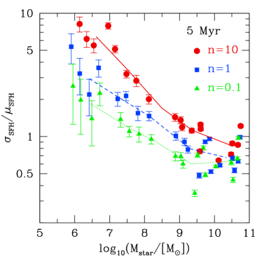
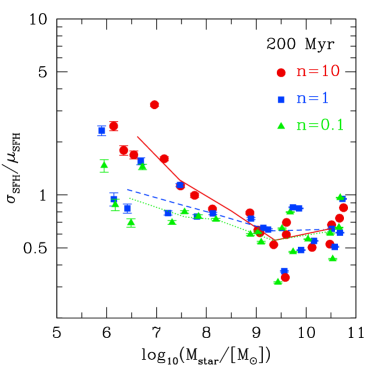
للحصول على فكرة عن المقاييس الزمنية ذات الصلة، يبين الشكل 7 الزمن الديناميكي مقابل نصف القطر لمحاكيات DMO (خطوط سوداء متقطعة) والمحاكيات الهيدروديناميكية ذات (خطوط حمراء متصلة). ويقيس الزمن الديناميكي الوقت اللازم للانتقال من نصف قطر إلى . وعند 1 في المئة من نصف القطر الفيريالي يتغير الزمن الديناميكي بين 30 و50 Myr لمحاكيات DMO. وفي المحاكيات الهيدروديناميكية يوجد تغير أكبر، لأن بعض الهالات تتمدد (فتزيد )، بينما تنكمش أخرى (فتنقص .). وهذا يحفزنا على قياس معدلات تشكل النجوم على مقياس زمني أقل بكثير من Myr. أما تغير معدلات تشكل النجوم على مقاييس زمنية مقدارها 100 Myr، كما اعتمد مثلا في Bose et al. (2018)، فليس ذا صلة بدور تمدد الهالة المدفوع بالتغذية الراجعة.
رصديا، تتقصى مؤشرات تشكل النجوم المختلفة مقاييس زمنية مختلفة. يتتبع H تشكل النجوم خلال آخر Myr، بينما تتتبع فوتونات الأشعة فوق البنفسجية البعيدة (FUV) مقاييس زمنية أطول Myr (Calzetti, 2013). وبدافع من ذلك، ننظر افتراضيا في المقاييس الزمنية 5 Myr و200 Myr. وعلى المقاييس المكانية المعنية، يكون الأول أصغر بكثير من الزمن الديناميكي، بينما يكون الثاني مساويا تقريبا للزمن الديناميكي. ونذكر أن تشكل النجوم في محاكياتنا يحسب كل 0.84 Myr (عمر الكون/)، لذلك يمكننا حل تشكل النجوم على مقياس زمني 5 Myr.
5.1 مجرات منفردة: حالات اختبار
يبين الشكل 8 تاريخ تشكل النجوم (SFH، يسار)، والسرعة الدائرية للمادة المظلمة (وسط)، والكسور الغازية (يمين) لثلاث مجرات لها استجابات هالية مختلفة نوعيا عند (لا تغير، تمدد، انكماش). وتبين الخطوط والنقاط الحمراء نتائج ، والزرقاء ، والخضراء . وتحسب SFHs من أعمار الجسيمات النجمية داخل المجرة عند الانزياح الأحمر . ونرى أن التغير في SFH يعتمد بقوة على عتبة تشكل النجوم، والمقياس الزمني الذي نقيس عليه تشكل النجوم، وكتلة المجرة. فالعتبات الأعلى، والمقاييس الزمنية الأقصر، والكتل الأصغر تؤدي إلى SFH أشد انفجارية. وسنبين أدناه أن هذه الاتجاهات تنطبق على العينة الكاملة المؤلفة من 20 هالة.
يبين اللوح الأوسط تطور السرعة الدائرية للمادة المظلمة عند 1 في المئة من نصف القطر الفيريالي ، مطبعة بسرعة الهالة الفيريالية في محاكاة DMO عند . وتعرض نتائج محاكيات DMO (محجمة بـ ) بدوائر سوداء. ويكون التطور الزمني عادة سلسا جدا، سواء عندما تتمدد الهالة أو عندما تنكمش. ويعرض اللوح العلوي مجرة قزمة (g1.18e10) تظهر تمددا طفيفا للعتبات الثلاث كلها، وتمددا أكبر قليلا عند قيم أعلى من . ويعرض اللوح الأوسط مجرة (g1.59e11) تخضع لتمدد قوي عند ، بينما تكاد لا تتغير عند و. ويعرض اللوح السفلي مجرة بكتلة درب التبانة (g7.08e11) تخضع لانكماش قوي عند و، وانكماش طفيف عند . ومن ثم نرى ارتباطا بين انفجارية تشكل النجوم على المقاييس الزمنية دون-الديناميكية واستجابة الهالة. وتؤدي SFHs الأشد انفجارية إلى كثافات مركزية أدنى للمادة المظلمة، كما هو متوقع من النماذج التحليلية (Pontzen & Governato, 2012; Dutton et al., 2016b)
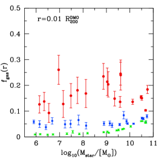
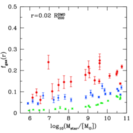
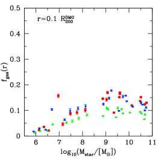
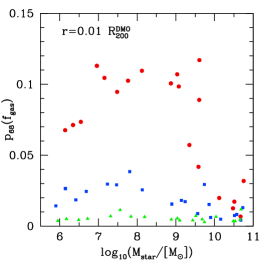
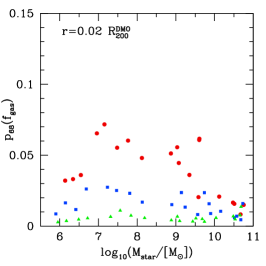
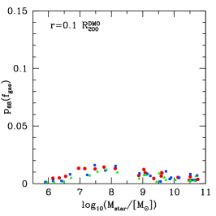
كما نوقش أعلاه، يتمثل شرط رئيسي آخر كي تمدد التدفقات الخارجة الهالة في وجود غاز كاف عند أنصاف الأقطار الصغيرة. وتبين الألواح اليمنى من الشكل 8 الكسر الغازي المقاس عند 1 في المئة من نصف القطر الفيريالي DMO عند . ويشار إلى هذا نصف القطر في الزاوية العلوية اليسرى من الألواح، ويتغير من kpc لـ g1.18e10 إلى kpc لـ g7.08e11. ونرى اتجاها واضحا نحو كسور غازية متوسطة أعلى وتغيرية أعلى عند عتبات تشكل النجوم الأعلى. وهذا متوقع لأن الغاز عند العتبات الأدنى يتحول إلى نجوم قبل أن يصبح شديد الكثافة. ونرى أيضا أن المجرة الأقل كتلة (g1.18e10) لها تغيرية كسر غازي أدنى من المجرة متوسطة الكتلة (g1.59e11)، وهو ما يفسر نوعيا الفروق في التمدد بين هاتين المجرتين. وبالنسبة إلى المجرة ذات كتلة درب التبانة، تبدأ الفروق في انكماش الهالة نحو زمن 3 Gyr. وتظهر محاكاة تغيرات كبيرة في الكسر الغازي حول هذا الزمن، وهو ما يمنع على الأرجح الانكماش القوي الذي يحدث في محاكيات العتبة المنخفضة.
5.2 مجرات منفردة: العينة الكاملة
نوسع الآن نتائج القسم السابق إلى العينة الكاملة المؤلفة من 20 هالة. يبين الشكل 9 الانحراف المعياري لـ SFH، ، بوحدات متوسط SFH، . وهذا مقياس لمدى انفجارية تشكل النجوم، ويمكن استخدامه لكمية SFHs التحليلية المستعملة في تفسير رصود المجرات. وعلى مقياس زمني 5 Myr (اللوح الأيسر)، توجد إزاحة شبه ثابتة في التشتت بين العتبات الثلاث، مع SFH أشد انفجارية عند جميع الكتل عندما تكون عتبة تشكل النجوم أعلى. وعلى مقياس زمني 200 Myr (اللوح الأيمن)، لا توجد فروق كبيرة في SFH للمجرات فوق كتلة نجمية . ونذكر أن مقياس الكتلة هو حيث يحدث أكبر تمدد للهالة. وهذا يؤكد أن تغيرات تشكل النجوم (ومن ثم الكسور الغازية) على مقياس زمني ديناميكي لا تؤدي دورا في تمدد الهالة. ويجب أن تحدث تغيرات تشكل النجوم على مقياس زمني دون-ديناميكي لكي تقود استجابة هالية. ونرى لكل من المقاييس الزمنية القصيرة والطويلة أن المجرات الأقل كتلة لها SFHs أشد انفجارية بصورة منهجية. وبمقارنة هذا الرسم باستجابة الهالة في الشكل 3، نرى أن انفجارية تشكل النجوم بحد ذاتها لا تحدد استجابة الهالة، لأن المجرات الأقل كتلة لها SFHs أشد انفجارية، ومع ذلك لا يحدث تغير في مقطع المادة المظلمة.
قدرنا اللايقين في SFH باستخدام خطأ بواسون في عدد الجسيمات النجمية المتكونة. ومن المرجح أن يكون هذا الخطأ حدا أعلى، لأن جزءا فقط من الغاز المؤهل لتشكيل النجوم يتحول فعلا إلى نجوم. ولا تكون الأخطاء مهمة إلا في المجرات الأربع الأقل كتلة () وعلى المقاييس الزمنية الصغيرة، بسبب تكون بضعة آلاف فقط من الجسيمات النجمية. وتكون اللايقينات أصغر عند أعلى، لأن تشكل النجوم هنا يتركز في بضع دفعات محلولة جيدا (انظر اللوح العلوي الأيسر في الشكل 8). أما عند المنخفضة، فيكون تشكل النجوم منتظما تقريبا في الزمن، ولا يوجد إلا عدد قليل من أحداث تشكل النجوم في كل فاصل زمني 5 Myr. لذلك نستنتج أن اتجاه ازدياد انفجارية تشكل النجوم في المجرات الأقل كتلة ليس مظهرا من مظاهر التقطع العددي.
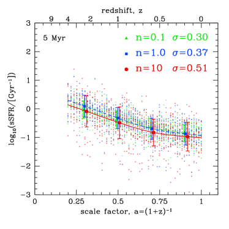
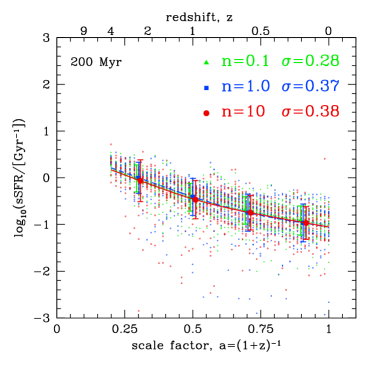
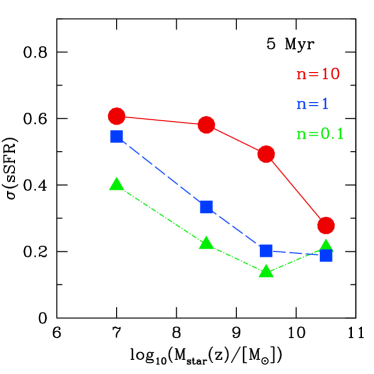
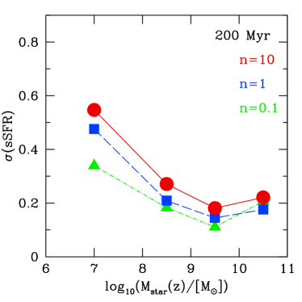
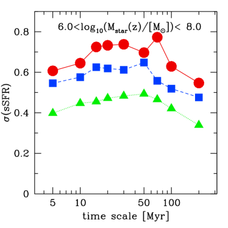
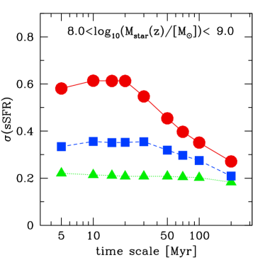
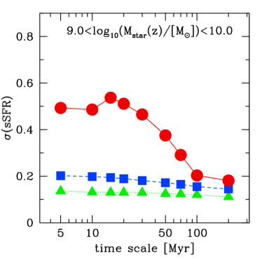
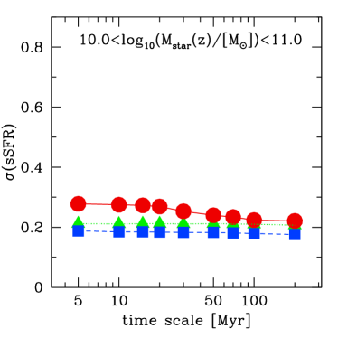
يمكن تقييد SFHs الحديثة للمجرات المنفردة باستخدام نسبة تدفقي H إلى FUV (Weisz et al., 2012; Sparre et al., 2017) أو بمزيج من انقطاع 4000Å، ومؤشرات H ومعدل تشكل النجوم النوعي SFR (Kauffmann, 2014). والخلاصة العامة من الرصود هي أن المجرات الأقل كتلة تمتلك SFHs حديثة أشد انفجارية. ويتسق هذا نوعيا مع محاكياتنا عند جميع قيم ، وكذلك مع محاكيات FIRE (Sparre et al., 2017)، التي تمتلك عالية.
يبين الشكل 10 المتوسط (الألواح العليا) والتغيرية (الألواح السفلى) للكسور الغازية (المقيسة عبر الزمن الكوني) مقابل الكتلة النجمية عند . ويقاس الكسر الغازي داخل نصف قطر فيزيائي ثابت. وتقابل كل نقطة تطور مجرة منفردة. وأنصاف الأقطار هي 1 في المئة (يسار)، و2 في المئة (وسط)، و10 في المئة (يمين) من نصف القطر الفيريالي DMO عند . وتعرف التغيرية بأنها إحاطة 68% من النقاط حول المتوسط. ويفسر هذا الرسم الفروق في استجابة الهالة التي نراها بين قيم المختلفة، وكذلك عند أنصاف الأقطار المختلفة. فعند أنصاف أقطار كبيرة (10 في المئة من نصف القطر الفيريالي)، توجد تغيرية أقل من 2 في المئة في لجميع كتل المجرات وعتبات تشكل النجوم. ونذكر أن الآثار التمددية للتدفقات الغازية الخارجة تتناسب مع مربع كسر التدفق الخارج، لذلك لا نتوقع آثارا تمددية عند أنصاف الأقطار الكبيرة. ومن ثم، ستتحدد بنية الهالة المظلمة على هذه المقاييس بالانكماش الأديباتي بسبب التدفقات الداخلة. وعند أنصاف أقطار أصغر نرى كسورا غازية وتغيرية أعلى عند ، لكن كسورا غازية وتغيرية أدنى عند العتبات الأدنى. وبالنسبة إلى ، يتبع اتجاه التغيرية مع الكتلة اتجاه استجابة الهالة مع الكتلة كما في الشكل 3. أما عند ، فتكون التغيرية أقل من واحد في المئة، وهو ما يفسر سبب عدم رؤيتنا أي تمدد هالي في المجرات منخفضة الكتلة، رغم وجود بعض التشتت في SFHs.
نلاحظ أن المقياس الزمني الذي نقيس عليه التغير (في الكسور الغازية) محدود بتواتر مخرجات المحاكاة، Myr. وعند أنصاف الأقطار الصغيرة لا يكون هذا زمنا دون-ديناميكي. وقد اختبرنا بضع محاكيات بمخرجات أكثر، ونرى منها هبوطات مفاجئة في الكسور الغازية تحدث على مقاييس زمنية Myr. غير أن التشتت حول متوسط الكسر الغازي قابل للمقارنة عندما نستخدم 13 Myr بين المخرجات، أو افتراضنا المعتاد Myr. ونلاحظ أن SFHs في الشكلين 8 و9 تقاس من زمن ولادة الجسيمات النجمية، ولذلك لا تتأثر بتواتر المخرجات.
5.3 معدلات تشكل النجوم لعينات من المجرات
لدراسة تغيرية تشكل النجوم على مقاييس زمنية قصيرة Myr، يمكن اللجوء إلى عينات من المجرات. وبالنسبة إلى عينات المجرات، يمكن رصديا قياس التشتت في علاقة معدل تشكل النجوم مقابل الكتلة النجمية، أو مكافئه معدل تشكل النجوم النوعي، sSFRSFR. يبين الشكل 11 تطور sSFR للمجرة الرئيسية في كل من المحاكيات البالغ عددها 20، من أجل ، وsSFR Gyr-1، ومن أجل . وترمز ألوان النقاط إلى عتبة تشكل النجوم. وتبين النقاط الكبيرة المتوسطات في صناديق عامل المقياس. وتمثل الخطوط استيفاءات مكعبة للمتوسط الذي نقيس بالنسبة إليه الانحراف المعياري، . وتبين أشرطة الخطأ التشتت في صناديق انزياح أحمر عددها 4، مظهرة اعتمادا ضئيلا على الانزياح الأحمر. وعلى مقاييس زمنية 200 Myr (اللوح الأيمن)، يكون التشتت عند و هو نفسه ( dex) وأكبر بمقدار 0.1 dex منه عند . وعلى مقياس زمني 5 Myr (اللوح الأيسر)، يوجد فرق 0.2 dex في التشتت بين و.
يعرض اعتماد التشتت على الكتلة في الشكل 12 لمقياس زمني 5 (يسار) و200 Myr (يمين). وكما في الشكل 9، نرى أن التغير في sSFR أكبر في المجرات الأقل كتلة، وعلى المقاييس الزمنية الأقصر، وعند عتبات تشكل النجوم الأعلى. وتكون الفروق المتعلقة بعتبة تشكل النجوم أوضح ما تكون عند الكتل النجمية ()، حيث يحدث، على نحو لافت، أكبر تمدد في محاكيات . ويوجد فرق كبير (0.4 dex) في التشتت بين محاكيات و على مقاييس زمنية 5 Myr، لكن الفرق لا يتجاوز 0.1 dex على مقياس زمني 200 Myr.
لتحديد المقياس الزمني المميز للتغيرية في تشكل النجوم في الشكل 13، نرسم تشتت sSFR مقابل المقياس الزمني الذي يقاس عليه معدل تشكل النجوم، من 5 Myr إلى 200 Myr، وفي 4 صناديق من الكتلة النجمية (كما هو مبين). وعلى جميع المقاييس الزمنية والكتل النجمية، تمتلك محاكيات تشتتا أكبر من كل من و. ويبلغ التشتت ذروته عند مقياس زمني Myr، وهو ما يشير إلى المقياس الزمني المميز لنوبات تشكل النجوم في محاكيات NIHAO.
6 الخلاصة
نستخدم 20 مجموعات من المحاكيات الكونية الهيدروديناميكية من مشروع NIHAO (Wang et al., 2015) لدراسة أثر عتبة تشكل النجوم، ، في استجابة هالة المادة المظلمة لتشكل المجرات. وننظر في ثلاث قيم: (قيمة NIHAO المرجعية)، و، و. وتغطي كتل هالات المادة المظلمة المركزية في دراستنا المجال عند الانزياح الأحمر . ونلخص نتائجنا كما يلي:
-
•
بالنسبة إلى محاكيات و، تتسق علاقات الكتلة النجمية إلى كتلة الهالة مع مطابقة وفرة الهالات عند الانزياحات الحمراء ، من دون تعديل أي معامل آخر (الشكل 1). أما في محاكيات فتكون التغذية الراجعة فعالة أكثر من اللازم، منتجة كتلا نجمية منخفضة جدا. ويسهل إصلاح ذلك بتخفيض كفاءة التغذية الراجعة من النجوم الشابة من 0.13 إلى 0.04.
-
•
تظهر مقاطع كثافة المادة المظلمة عند الانزياح الأحمر انحرافات كبيرة عن محاكيات DMO عديمة التبدد (الشكل 2)، مع كل من الانكماش والتمدد.
-
•
ترتبط استجابة الهالة عند أنصاف الأقطار الصغيرة ( في المئة من نصف القطر الفيريالي) بقوة أكبر مع مما ترتبط به مع الكتلة النجمية أو كتلة الهالة وحدهما، وذلك لكل قيم (الشكل 3).
- •
-
•
تمتلك مجرات الحقل في المجموعة المحلية ذات الكتل النجمية سرعات دائرية عند نصف قطر نصف الضوء متسقة مع محاكيات ، لكنها أخفض بعامل من محاكيات (الشكل 4).
-
•
تمتلك مجرات الحقل ذات الكتل النجمية سرعات دائرية للمادة المظلمة عند 2 kpc أخفض بعامل مما تتنبأ به محاكيات و، لكنها أعلى بعامل من محاكيات (الشكل 5).
-
•
بالنسبة إلى المجرات ذات كتلة درب التبانة، تتسق المحاكيات مع السرعة الدائرية المرصودة عند 8 kpc و60 kpc. وتنكمش جميع الهالات، مع انكماش أكبر عند أنصاف الأقطار الأصغر. وتمتلك المحاكيات ذات و انكماشا هاليا شبه متطابق، بينما تمتلك المحاكيات ذات انكماشا أقل بعامل عند المقاييس الصغيرة (الشكل 6).
-
•
تمتلك المحاكيات ذات الأدنى متوسطا أدنى، وتغيرية أدنى، في الكسور الغازية داخل أنصاف الأقطار الصغيرة (الشكلان 8 و 10). وبالنسبة إلى المجرات التي تختبر أكبر تمدد هالي في محاكيات ، تكون تغيرات الكسور الغازية . ويتوقع أن تمدد كل دورة من التدفق الخارج والداخل هذه مدارات المادة المظلمة بنحو واحد في المئة، لذلك يلزم كثير من هذه الدورات لتمديد هالة المادة المظلمة تمددا معتبرا. أما في محاكيات فتكون تغيرية الكسور الغازية ، ومن ثم يكون الأثر التمددي لكل دورة ، وبالتالي مهملا. ويمكن قياس متوسط الكسور الغازية وتغيريتها (لجماعات من المجرات) برصود راديوية.
- •
-
•
لكي تقود تغذية تشكل النجوم الراجعة تمدد الهالة، يجب أن تحدث التغيرية على مقياس زمني دون-ديناميكي (أي أقل بكثير من 50 Myr عند واحد في المئة من نصف القطر الفيريالي). ومن ثم فإن قياس معدلات تشكل النجوم على مقياس زمني 100 Myr، كما فعل Bose et al. (2018)، ليس ذا صلة بمشكلة تمدد الهالة المدفوع بالتغذية الراجعة.
-
•
في محاكيات ، لا يعتمد التشتت في sSFR إلا ضعيفا على المقياس الزمني الذي يقاس عليه SFR. أما في محاكيات ، فتؤدي المقاييس الزمنية الأقصر إلى تشتت أكبر وصولا إلى مقياس زمني مميز قدره Myr (الشكل 13).
- •
-
•
في مجال الكتلة النجمية الذي يخضع لأكبر تمدد هالي ، يوجد تشتت أكبر بمقدار 0.4 dex في sSFR (عند قياسه على مقاييس زمنية Myr) لمحاكيات مقارنة بمحاكيات (الشكل 13). ومن حيث المبدأ، يمكن قياس معدلات تشكل النجوم على هذه المقاييس الزمنية بانبعاث H، بشرط ألا يؤثر الانطفاء في تشتت sSFR تأثيرا شديدا.
توفق دراستنا بين النتائج المتعارضة في الأدبيات المستندة إلى المحاكيات الكونية حول كيفية استجابة هالة المادة المظلمة لتشكل المجرات. وبالإضافة إلى النسبة بين الكتلة النجمية وكتلة الهالة (مثلا، Di Cintio et al., 2014a)، بينا أن استجابة الهالة دالة قوية في عتبة تشكل النجوم. فالمحاكيات التي تستخدم عتبات تشكل نجوم منخفضة ()، مثل EAGLE (Schaye et al., 2015)، لا تجد تغيرا معتبرا في الهالات ذات الكتلة و، وتجد انكماشا طفيفا في الهالات ذات الكتلة (Schaller et al., 2015; Bose et al., 2018). وهذا هو بالضبط ما نجده في محاكياتنا ذات . أما المحاكيات ذات عتبات تشكل النجوم العالية ()، مثل Governato et al. (2010); Di Cintio et al. (2014a); Tollet et al. (2016); Chan et al. (2015)، فتؤدي إلى تمدد الهالة في المجرات القزمة (كتل الهالات من إلى ) وإلى الانكماش في الهالات ذات كتلة درب التبانة ().
توصل Benitez-Llambay et al. (2018) بصورة مستقلة إلى خلاصة مشابهة باستخدام محاكيات بكود EAGLE. وينظر هؤلاء المؤلفون إلى اعتماد بنية الهالة على عتبة تشكل النجوم من منظور متشائم بشأن القدرة على التنبؤ ببنية هالات CDM. ونحن أكثر تفاؤلا، لأننا بينا أن ثمة فروقا كبيرة في الكسور الغازية ومعدلات تشكل النجوم بين المحاكيات ذات عتبات تشكل النجوم المختلفة. لذلك ينبغي أن يصبح ممكنا في المستقبل القريب التمييز رصديا بين عتبات تشكل النجوم المختلفة، وبصورة أعم معايرة المعاملات الحرة للنموذج دون-الشبكي لتشكل النجوم والتغذية الراجعة.
شكر وتقدير
نشكر الحكم الذي ساعد تقريره على تحسين الورقة. أجري هذا البحث على موارد الحوسبة عالية الأداء في New York University Abu Dhabi؛ وعلى عنقود theo في Max-Planck-Institut für Astronomie؛ وعلى عناقيد hydra في Rechenzentrum in Garching. يعرب المؤلفون عن امتنانهم لـ Gauss Centre for Supercomputing e.V. (www.gauss-centre.eu) على تمويل هذا المشروع بتوفير وقت حوسبة على الحاسوب الفائق GCS Supercomputer SuperMUC في Leibniz Supercomputing Centre (www.lrz.de). يقر TB بالدعم من Sonderforschungsbereich SFB 881 «نظام درب التبانة» (المشروع الفرعي A2) التابع لـ German Research Foundation (DFG). يمول AO من Deutsche Forschungsgemeinschaft (DFG، German Research Foundation) – MO 2979/1-1.
References
- Behroozi et al. (2013) Behroozi, P. S., Wechsler, R. H., & Conroy, C. 2013, ApJ, 770, 57
- Benitez-Llambay et al. (2018) Benitez-Llambay, A., Frenk, C. S., Ludlow, A. D., & Navarro, J. F. 2018, arXiv:1810.04186
- Blumenthal et al. (1986) Blumenthal, G. R., Faber, S. M., Flores, R., & Primack, J. R., 1986, ApJ, 301, 27
- Bose et al. (2018) Bose, S., Frenk, C. S., Jenkins, A., et al. 2018, arXiv:1810.03635
- Bovy & Rix (2013) Bovy, J., & Rix, H.-W. 2013, ApJ, 779, 115
- Buck et al. (2017) Buck, T., Macciò, A. V., Obreja, A., et al. 2017, MNRAS, 468, 3628
- Buck et al. (2018) Buck, T., Macciò, A. V., Dutton, A. A., Obreja, A., & Frings, J. 2018, MNRAS in press, arXiv:1804.04667
- Buck et al. (2018) Buck, T., Dutton, A. A., & Macciò, A. V. 2018, arXiv:1812.05613
- Bullock & Boylan-Kolchin (2017) Bullock, J. S., & Boylan-Kolchin, M. 2017, ARA&A, 55, 343
- Calzetti (2013) Calzetti, D. 2013, Secular Evolution of Galaxies, 419
- Chan et al. (2015) Chan, T. K., Kereš, D., Oñorbe, J., et al. 2015, MNRAS, 454, 2981
- Crain et al. (2015) Crain, R. A., Schaye, J., Bower, R. G., et al. 2015, MNRAS, 450, 1937
- Dalla Vecchia & Schaye (2012) Dalla Vecchia, C., & Schaye, J. 2012, MNRAS, 426, 140
- Di Cintio et al. (2014a) Di Cintio, A., Brook, C. B., Macciò, A. V., et al. 2014, MNRAS, 437, 415
- Dutton et al. (2011) Dutton, A. A., Conroy, C., van den Bosch, F. C., et al. 2011, MNRAS, 416, 322
- Dutton & Macciò (2014) Dutton, A. A., & Macciò, A. V. 2014, MNRAS, 441, 3359
- Dutton et al. (2016a) Dutton, A. A., Macciò, A. V., Frings, J., et al. 2016a, MNRAS, 457, L74
- Dutton et al. (2016b) Dutton, A. A., Macciò, A. V., Dekel, A., et al. 2016b, MNRAS, 461, 2658
- Dutton et al. (2017) Dutton, A. A., Obreja, A., Wang, L., et al. 2017, MNRAS, 467, 4937
- Dutton et al. (2019) Dutton, A. A., Obreja, A., & Macciò, A. V. 2019, MNRAS, 482, 5606
- El-Zant et al. (2001) El-Zant, A., Shlosman, I., & Hoffman, Y. 2001, ApJ, 560, 636
- Garrison-Kimmel et al. (2014) Garrison-Kimmel, S., Boylan-Kolchin, M., Bullock, J. S., & Kirby, E. N. 2014, MNRAS, 444, 222
- Gill et al. (2004) Gill, S. P. D., Knebe, A., & Gibson, B. K. 2004, MNRAS, 351, 399
- Gnedin et al. (2004) Gnedin, O. Y., Kravtsov, A. V., Klypin, A. A., & Nagai, D. 2004, ApJ, 616, 16
- Governato et al. (2010) Governato, F., Brook, C., Mayer, L., et al. 2010, Nature, 463, 203
- Grand et al. (2017) Grand, R. J. J., Gómez, F. A., Marinacci, F., et al. 2017, MNRAS, 467, 179
- Grasha et al. (2017) Grasha, K., Calzetti, D., Adamo, A., et al. 2017, ApJ, 840, 113
- Gutcke et al. (2017) Gutcke, T. A., Stinson, G. S., Macciò, A. V., Wang, L., & Dutton, A. A. 2017, MNRAS, 464, 2796
- Hopkins et al. (2014) Hopkins, P. F., Kereš, D., Oñorbe, J., et al. 2014, MNRAS, 445, 581
- Hopkins et al. (2018) Hopkins, P. F., Wetzel, A., Kereš, D., et al. 2018, MNRAS, 480, 800
- Kauffmann (2014) Kauffmann, G. 2014, MNRAS, 441, 2717
- Kirby et al. (2014) Kirby, E. N., Bullock, J. S., Boylan-Kolchin, M., Kaplinghat, M., & Cohen, J. G. 2014, MNRAS, 439, 1015
- Knollmann & Knebe (2009) Knollmann, S. R., & Knebe, A. 2009, ApJS, 182, 608
- Lelli et al. (2016) Lelli, F., McGaugh, S. S., & Schombert, J. M. 2016, AJ, 152, 157
- Macciò et al. (2012) Macciò, A. V., Stinson, G., Brook, C. B., et al. 2012, ApJ, 744, L9
- Macciò et al. (2016) Macciò, A. V., Udrescu, S. M., Dutton, A. A., et al. 2016, MNRAS, 463, L69
- Marinacci et al. (2014) Marinacci, F., Pakmor, R., & Springel, V. 2014, MNRAS, 437, 1750
- Moster et al. (2013) Moster, B. P., Naab, T., & White, S. D. M. 2013, MNRAS, 428, 3121
- Moster et al. (2018) Moster, B. P., Naab, T., & White, S. D. M. 2018, MNRAS, 477, 1822
- Oman et al. (2015) Oman, K. A., Navarro, J. F., Fattahi, A., et al. 2015, MNRAS, 452, 3650
- Oman et al. (2019) Oman, K. A., Marasco, A., Navarro, J. F., et al. 2019, MNRAS, 482, 821
- Planck Collaboration et al. (2014) Planck Collaboration, Ade, P. A. R., Aghanim, N., et al. 2014, A&A, 571, A16
- Pontzen & Governato (2012) Pontzen, A., & Governato, F. 2012, MNRAS, 421, 3464
- Power et al. (2003) Power, C., Navarro, J. F., Jenkins, A., et al. 2003, MNRAS, 338, 14
- Rahmati et al. (2013) Rahmati, A., Schaye, J., Pawlik, A. H., & Raičevi, M. 2013, MNRAS, 431, 2261
- Read & Gilmore (2005) Read, J. I., & Gilmore, G. 2005, MNRAS, 356, 107
- Read et al. (2016) Read, J. I., Agertz, O., & Collins, M. L. M. 2016, MNRAS, 459, 2573
- Santos-Santos et al. (2018) Santos-Santos, I. M., Di Cintio, A., Brook, C. B., et al. 2018, MNRAS, 473, 4392
- Sawala et al. (2016) Sawala, T., Frenk, C. S., Fattahi, A., et al. 2016, MNRAS, 457, 1931
- Schaller et al. (2015) Schaller, M., Frenk, C. S., Bower, R. G., et al. 2015, MNRAS, 451, 1247
- Schaye et al. (2015) Schaye, J., Crain, R. A., Bower, R. G., et al. 2015, MNRAS, 446, 521
- Semenov et al. (2017) Semenov, V. A., Kravtsov, A. V., & Gnedin, N. Y. 2017, ApJ, 845, 133
- Simard et al. (2011) Simard, L., Mendel, J. T., Patton, D. R., Ellison, S. L., & McConnachie, A. W. 2011, ApJS, 196, 11
- Sparre et al. (2017) Sparre, M., Hayward, C. C., Feldmann, R., et al. 2017, MNRAS, 466, 88
- Stadel et al. (2009) Stadel, J., Potter, D., Moore, B., et al. 2009, MNRAS, 398, L21
- Stinson et al. (2006) Stinson, G., Seth, A., Katz, N., et al. 2006, MNRAS, 373, 1074
- Stinson et al. (2013) Stinson, G. S., Brook, C., Macciò, A. V., et al. 2013, MNRAS, 428, 129
- Stinson et al. (2015) Stinson, G. S., Dutton, A. A., Wang, L., et al. 2015, MNRAS, 454, 1105
- Teyssier et al. (2013) Teyssier, R., Pontzen, A., Dubois, Y., & Read, J. I. 2013, MNRAS, 429, 3068
- Tollet et al. (2016) Tollet, E., Macciò, A. V., Dutton, A. A., et al. 2016, MNRAS, 456, 3542
- Valenzuela et al. (2007) Valenzuela, O., Rhee, G., Klypin, A., et al. 2007, ApJ, 657, 773
- Vogelsberger et al. (2014) Vogelsberger, M., Genel, S., Springel, V., et al. 2014, MNRAS, 444, 1518
- Wang et al. (2015) Wang, L., Dutton, A. A., Stinson, G. S., et al. 2015, MNRAS, 454, 83
- Wadsley et al. (2017) Wadsley, J. W., Keller, B. W., & Quinn, T. R. 2017, MNRAS, 471, 2357
- Weinberg & Katz (2002) Weinberg, M. D., & Katz, N. 2002, ApJ, 580, 627
- Weisz et al. (2012) Weisz, D. R., Johnson, B. D., Johnson, L. C., et al. 2012, ApJ, 744, 44
- Widrow et al. (2008) Widrow, L. M., Pym, B., & Dubinski, J. 2008, ApJ, 679, 1239-1259
- Xue et al. (2008) Xue, X. X., Rix, H. W., Zhao, G., et al. 2008, ApJ, 684, 1143